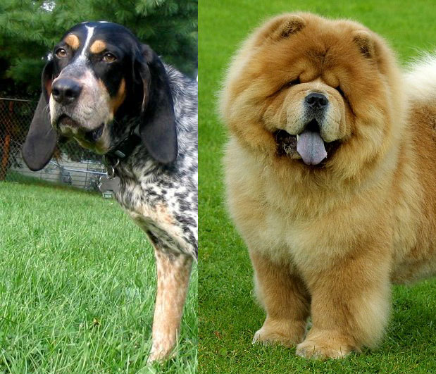
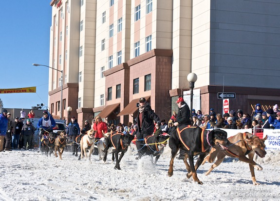

So I just received the test results back from Letzty's genetic background. What I expected was pretty much 50% Rottweiler with some lab and maybe hound thrown in. What I got instead was a fascinating genetics lesson and a new viewpoint on the idea of "breeds".
A little background on Letzty: We adopted her from Mutts4Rescue in Rhode Island via Petfinder.com about 5 years ago. She was my first dog and I had done loads of research on breeds and was determined that because I wanted an active outdoor companion who could still chill in my tiny apartment, the best breeds for me were Rottie or Rhodesian Ridgeback. I would have nothing but. Letzty was listed as a Rottie/Ridgeback mix and so she was the one I adopted. I was fairly certain that her listing was correct because I was told the mother was a 100lbs-ish Rottweiler and the father was probably a lab/ridgeback stray that often came around. I was further assured of this by the fact that her siblings were mostly yellow-lab looking. Add in her love of running, emotional intelligence, love of water, high tolerance for pain/heat/cold, protective instincts and growling at only statues of lions and I was convinced she had been listed correctly.
Five years later, however, my curiosity finally got the better of me and I decided to get her tested, just to see if it was only lab or whether there actually was Rhodesian Ridgeback in the father. The Wisdom Panel 2.0, the market leader, test is like $70, which is a lot, but it's a one-time expense over 12 years or whatever, and it meant I could stop being curious. So with me administering it just to confirm what I already suspected, you can imagine my surprise when it came back that she was not a Rottie, but a Bluetick Coonhound/Chow Chow mix!
I immediately emailed the company with some pictures and explained her background and expressed my confusion/skepticism. I could maybe see a bit of hound in her, but she bore no resemblance to either breed, either physical or personality. We knew the mother was a 100lbs rottie looking animal. How could there be no rottie showing up? Was it a sham? Was there a mix up? Was the sample contaminated?". I was looking for either my money back or for them to resend out the test.
They responded back to me the very same day and I was very impressed. I'm sure they have to have some response for skeptics like me prepared, as I'm sure I'm not the only one who doubts my results. But instead of a canned response, I got a very long, detailed, and personal email back that went back over her test results and compared them with my assumptions and where and why Letzty might have gotten the genes that make up her appearance. (You can read the full PDF of the email if you're interested in more details or sources for statistics)
First off, he checked my DNA sample and not only was it not contaminated, it was of good quality and proved a basis of comparison for 95% of the 321 genetic markers that help to identify breed. And while they initially present the results as such, it's not accurate to label Letzty as a Bluetick Coonhound/Chow Chow mix, but rather as 25% Bluetick Coonhound with 75% All Breed. (All Breed being the more PC term for the scientific term of "mongrel", meaning more than 3 generations mixed and therefore undetectable as a specific breed) The Chow Chow only came in at a great-grandparent level, and even then was detected at a "trace confidence", meaning that it only contributed somewhere between 6.25% - 12.5% of her DNA.
Essentially, Letzty is a Bluetick Coonhound flavored Heinz-57, with maybe a dash of Chow Chow generations ago.
Even more above-and-beyond, they actually went back and cross-referenced Letzty's genetic profile against those of other dogs determined to be Rottweilers (See chart at right) Clearly, while she was closer than some other All Breeds, she was in a totally different quadrant than she would be in if she were actually of rottweiler descent. So how could it be that both she and her mother looked so much along those lines?
Turns out, visual identification is a really shoddy way of identifying breeds. In fact, research using shelter personal found guessing mixed breeds' ancestry using visual identification "was only accurate approximately 25% of the time". So even people who work with various breeds for a living couldn't identify the correct breed 75% of the time. Especially with many breeds having specialized looks that come from recessive genes, it's very easy for more dominant genes to make the offspring unrecognizable from their parents. One example given in their email to me was the case (image to the right) where a Basenji and a Cocker Spaniel were bred, only to result in two puppies that resembled small pit/lab mixes more than either of their parents.
This, by the way, is a perfect example of why breed-specific legislation is an absurd idea. BSL is based exclusively on what a dog looks like, and has nothing to do with genetics or lineage. Letzty, who has no rottweiler in her, could theoretically prevent us from getting homeowner's insurance because she resembles one. A "bully-breed resembling dog" is required to wear a muzzle in public in Boston, despite having a heritage of Labrador, Basenji, and Great Dane, for instance. (This is besides the fact that breed does not determine personality, of course, e.g. our former foster Spud, a 75lbs pit bull mix, has a less-reactionary and more tolerant temperament than our 30lbs purebred Corgi).
I have no data or articles to back this up, of course, but it occurs to me that while other breeds had aesthetics in mind in their origins, a breed like American Pit Bull Terrier would have been bred more task-specific and would probably have had more contributing genes. Perhaps when you blend a large variety of genes, you end up with a "bully-breed" looking result. Perhaps it's not that many modern pit bull-looking dogs are descended from such, but rather that they came to their looks by the same sort of process that the breed originally did. For instance, modern competitive sled dogs are not necessarily the team of huskies we always think of, but rather a combination of all-breeds selected for one non-aesthic trait, their love of running. As a result, you end up with animals with a lot of black, a dominant gene, and (surprisingly) short fur, another dominant gene. (For example, take the team on the right, the 8-time winning team of the GCI Open North American Championship sled dog race.) It's not necessarily that this appearance is tied to the genetics that make a dog love running, but rather the more likely physical characteristics that occur with a large variety of different genes being combined.
Like I said, no evidence to back that up, but I would be very interested in seeing some data on perception as "bully breed" vs. generations of mixed ancestry. If anyone knows of any such research, I would love to hear it!
Anyhow, back to Letzty specifically, her coat is black with tan points, which is recessive, but the Bluetick Coonhound does carry it, meaning if the other parent carried it, it would easily have resulted in her coloration. It would also explain why not all her litter had that coloration. Her coat is short, which is dominant and could have been picked up anywhere. Her ears are not droopy like the hound, which is why I long doubted that part of her heritage, but evidently she has what is termed as "base erect ears, which occur when there is more cartilage in the base of the ear than in the pinna, causing the ear to fold over on itself. This is a variation of the dominant drop ear trait and can occur when a mixed breed dog has ancestors with drop ears (the Bluetick Coonhound) but also has the influence of ancestors with upright ears (the Chow Chow)." Lastly, because size and shape are more of a melting-pot rather than a parent-vs-parent, her head shape with sleek body could very easily have originated with the Chow Chow and trickled and melded down through the generations to her current shape. So while it is still very strange to me to no longer refer to her as a rottie-mix (I've always identified myself as a rottie kind of guy) it's neat to look at Letzty now and realize that she truly is one-of-a-kind.
The take-away from all of this for me has been a sort of skepticism to the idea of fitting dogs in the classifications of "breeds".
I mean, I get it. Humans interpret our world through classifications. When we are little and we are told what a cow is, the first time we see a moose, we interpret it as 'cow' until we are told it is a moose. Then we see a deer and call it a moose and learn what a deer is and break it down further. 'Dog' is a very broad category, and in the search for a companion that is right for us, we break them down into smaller categories to better sort through the infinity of options we appear to have. Going back to the short-sightedness of breed-specific legislation, a politician is tasked with correcting a (human-related) problem, sees what he recognizes from his limited information as a problem, and tries to fix it. It's up to us to inform them that responsible pet ownership (the moose in this analogy) is a totally different category than the metaphorical cow of the problems he is trying to solve. That metaphor got away from me a bit, I know, but you get the idea.
I would love to see a web site where you could search for a pet not by 'rottweiler', 'chihuahua', or 'shepherd', but rather by 'affectionate', 'intelligent', 'quick-learner', or 'intuitive'. (In fact, if a shelter was interested in it, I'd love to try a Drupal site like that as a side project). Combine that with categories like 'size', 'coloration', 'shedding', and 'level of droolage' and I feel like you'd end up with much more accurate and successful searches.
Now, it would be hypocritical of me to say that breeds are irrelevant or to say no one should ever buy from a breeder because they think it'll get them certain traits. There is something neat about the historical aspect and the shared community. My wife and I are Corgi enthusiasts and will probably always have a Corgi. And we joyfully foster and volunteer as our penance. That being said, our concept of breeds is kind of backwards. Some people want labs because they want an enthusiastic family dog who loves water. Some people want Toy Fox Terriers because they want a small dog who likes to sit on laps. Some people like Vizlas because they want a 'velcro' dog. So we pick a breed according to what we expect the dog to grow up to be.
Wouldn't it make more sense though, to do the reverse? If you want a rottweiler because they're large, active, emotionally-intelligent, loyal dogs with rugged good looks...wouldn't it make more sense to head to your local rescue/shelter and find a ruggedly good-looking, large, active, emotionally-intelligent, loyal dog...who secretly just happens be a Bluetick Coonhound?
...It might be one of the best decisions you ever make.
I Love you, Letzty...whatever you are.